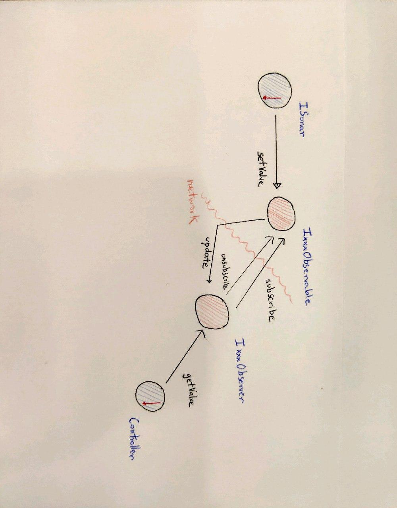
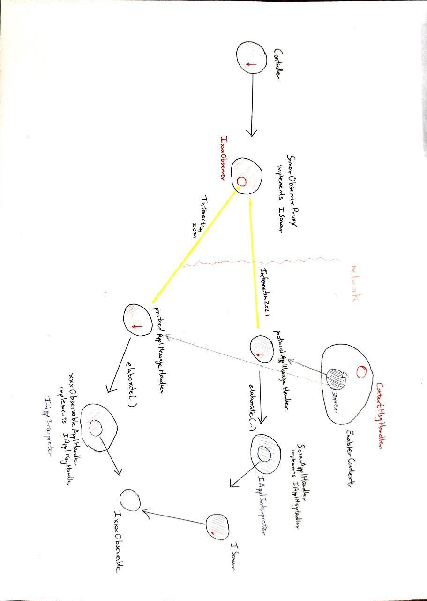

definire/chiarire le problematiche implicate dai requisiti.
fornire informazioni utili sui costi/tempi/risorse necessari.
La transizione ad un Sonar osservabile prospettata in Il pattern observer può essere affrontata pensando il SonarObservable in due modi
Decido di adottare modo_2 perchè nei requisiti viene citato solo la proprietà distanza come proprietà interessante; nessun requisito accenna alla necessità di tracciare anche le proprietà fisiche del sonar, quindi le ritengo non importanti
Il delta è configurabile dall'utente prima dell'avvio del sistema, e rimane fisso durante l'esecuzione del programma. Quindi gli Observer non hanno possibilità di dichiarare la propria sensibilità di variazione per la quale vengono notificati degli aggiornamenti.
public interface IxxxObservable {
public void subscribe(IxxxObserver o);
public void unsubscribe(IxxxObserver o);
public void setValue(IDistance distance);
}
public interface IxxxObserver {
public void update (IDistance distance);
public int getValue();
}
Architettura observer
Architettura contesto
{kind=link}
{kind=link}